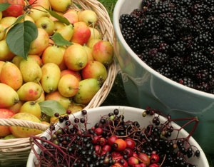

HAZEL PROUDLOVE/FOTOLIA
If you’ve never or rarely tasted homegrown fruit, you’ve missed out on some real treats. Luckily, you can integrate plants into your yard that will be a joy to both your eyes and your taste buds.